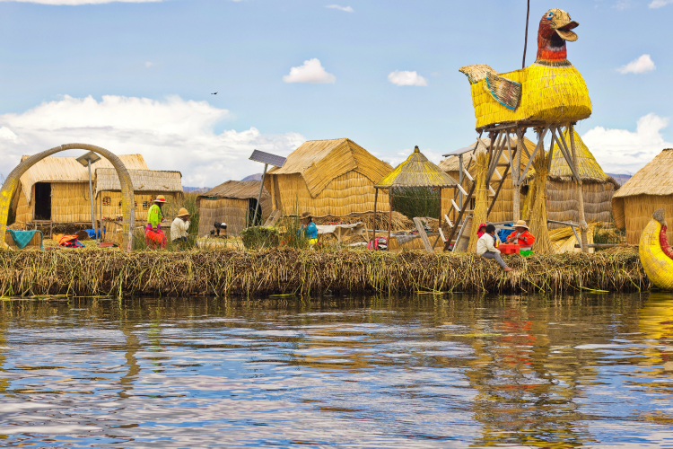

Puno ― 標高約3827m プーノ
プーノはペルー南部、アンデス山脈のほぼ中央に位置する標高3827mの小さな町です。標高3827mとは富士山やクスコ、世界一標高の高い首都である隣国ボリビアのラパスよりも高い場所です。季節は雨季と乾季に分けられ、10～4月頃の雨季には道が水没することもあります。標高が高いため温度差が極端で、6～8月の乾季には、日中は日焼け止めが必要になるほど日差しが強いのに、夜になると厚手のセーターが必要になるほど気温が下がります。プーノは汽船の航行する湖では世界で最も高地にあるとともに、インカ文明発祥の地といわれているティティカカ湖に接し、山に挟まれた土地に広がっています。インカ帝国時代のプーノは天神降臨の地のひとつとして重要な役割を果たしていましたが、スペイン軍による征服によって先住民たちはプーノを追いやられ、山奥や湖上の浮き島に移り住みました。やがて再び先住民たちは戻ってきて、現在のプーノではインディヘナの人々が人口の大きな割合を占めます。プーノではいたるところで色鮮やかな民族衣装に身を包んだ人々の姿を目にすることができ、年に1度フォルクローレと呼ばれる伝統音楽の祭典であるカンデラリア祭(Fiesta de la Candelaria)も行われています。
プーノへの行き方
- 飛行機
- 鉄道
- 長距離バス
リマからフリアカへのフライトとなります。最寄りの空港はプーノから47㎞北にあるフリアカのフリアカ空港Aeropuerto Juliaca(JUL)。クスコからもラタム航空LATAM Airlines(LA)が1日1便運航しており、所要時間は約55分です。
空港からプーノ市内へは乗り合いのツーリストバスでS/15、タクシーならS/80～120、所要時間は約1時間です。ツーリストバスはロシー・ツアーズRossy Toursが運行しており、事前予約することでホテルまで迎えに来てくれて、市内のホテルからは1人S/15です。
クスコからプーノへ、豪華寝台列車アンデアン・エクスプローラーが運行しています。移動にも利用できますが、全食事付き、列車内で寝泊まりするツアー型のプランになります。最大乗客48名、ダイニング車両やラウンジ車両、スパ車両があり、料金には飲食も含まれます。
料金
クスコ～プーノ 1人US$990～ 2人1室US＄1130～
クスコ～アレキパ 1人US＄2520～ 2人1室US＄2880～
クスコからは所要時間5～8時間、S/30～。1時間に1便程度ありますが、クルス・デル・スールなど大手の設備が整った便は早朝と深夜がほとんどで、あまり設備のよくない便が多いです。インカ・エクスプレスの運行する観光バスは、US＄50で昼食と英語ガイド付き。毎朝クスコのオフィス前を6：40に発車し、所要時間は約10時間です。
プーノの見どころ
ティティカカ湖 LagoTiticaca
その昔、インカの初代皇帝が妹とともに現れ、太陽の島に降り立ったという伝説の残る湖です。アンデス山脈のほぼ中央、海抜3,890mに位置しており、面積は8,300㎢（琵琶湖の約12倍）、最大水深は281mです。ペルーとボリビアの国境にあり、60％がペルー、40％がボリビアに位置しています。標高3,890mは汽船の航行する世界最高地点でもあります。アンデス山脈からの雪解け水が20以上もの川となって湖に流れ込み、水温は低いですが魚は多く生息し、なかでもトゥルチャTrucha（マス）は湖畔に住む人々の重要な食料になっています。
古代から神秘の湖とあがめられていたティティカカ湖周辺には、ティナ和久遺跡、シユスタニ遺跡など、プレ・インカ文明の遺跡が残されています。
ウロス島 Isla de Los Uros
プーノの桟橋からモーターボートで約40分の場所にあるウロス島はトトラと呼ばれる水生生物を積み重ねた“浮き島”で、群生するトトラのなかに大小合わせて40ほどの島が浮いています。島は6畳ほどの大きさのものから350人が生活するものまで様々です。合わせて約700人が生活しており、大きな島には学校や教会もあります。島民はウル族と呼ばれ、トゥルチャなどのティティカカ湖に生息する魚や水鳥を取り、畑で野菜を育てて生活しています。家はもちろん畑や家畜のえさにもトトラが使われています。また、島と島を結ぶ唯一の交通手段となる舟もトトラで作られており、この舟はバルサと呼ばれています。バルサは結構しっかりしているので、大人が15人乗っても沈みません。
